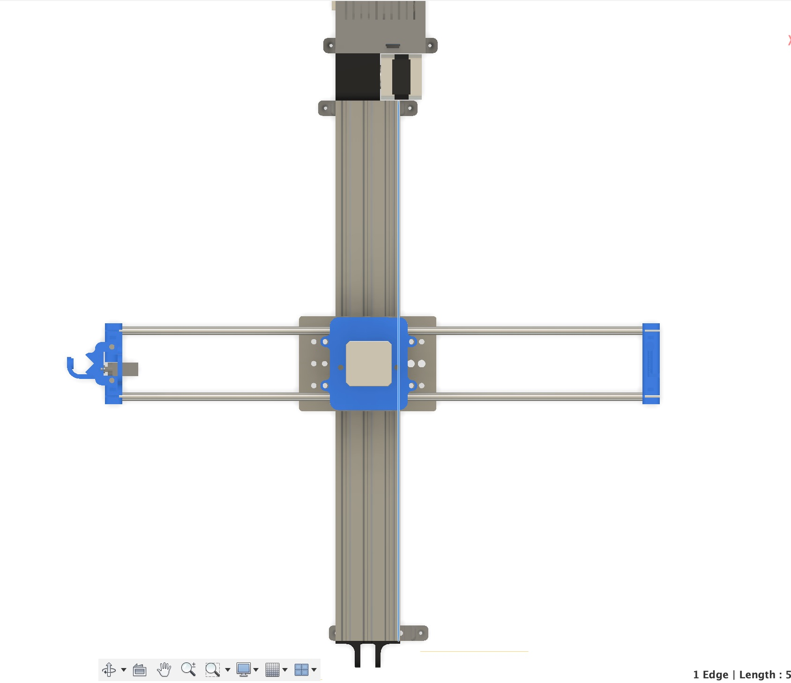
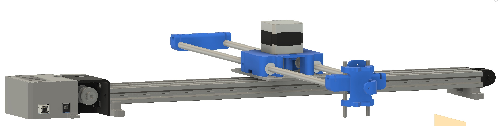

3D Print
 For the print assignment, I wanted to print something with a bunch of curves and overhanging features—like a bottle.
For the print assignment, I wanted to print something with a bunch of curves and overhanging features—like a bottle.
Tiny Bottle
(download stl file for the bottle ).
(download gcode for print)
I watched a youtube tutorial on glass bottle designing. I remade the bottle from a few weeks ago. I sliced and realized making a bottle to scale would take a while to print. Moreover, that seemed boring and overdone, so I thought it would be both easier and funnier to print a tiny bottle. I scaled it in prusa slicer to be 1.5 inches tall. It’s so tiny I lost it, so I wasn’t able to take a better picture besides this one, taken on the run.
3D Scan
 My friends got me some flowers for my birthday. I thought I would try to do a 3D scan of them. I had to adjust the lighting and the surface that the bottle rested on to improve the scan, but it still refused to accept some key details and improperly projected some perspectives. This is possibly because I had to crane my arm around and couldn't get the best angle from my desk.
My friends got me some flowers for my birthday. I thought I would try to do a 3D scan of them. I had to adjust the lighting and the surface that the bottle rested on to improve the scan, but it still refused to accept some key details and improperly projected some perspectives. This is possibly because I had to crane my arm around and couldn't get the best angle from my desk.
I wanted to use an iPhone app to do it. I was turned off by the paywall on Polycam. Thus, I surfed on Reddit and came across Scaniverse, from the same people who made Pokemon Go (niantic labs). Super free and you can export to any model/mp4/choose your file type). Moreover, there’s a very intuitive UI. You adjust your LIDAR range (from 0.3m to 5.0m) just pan a video around your object (or room, or neighborhood block). Wherever there is incomplete scanning, a red patch pups up letting you know to scan some more.
I wanted to play with the LIDAR ranges, so for the next scan I did my room and common room!
Final Project Update
Materials
For this, I drew heavily on the model from Andrew Sleigh online, as well as peeking at the designs of the camera sliders and the salvaged Ph.D. project that Bobby showed me in the lab. I plan to use a lot of these components, adjusting for what is available in the lab and then tweaking some bits to make it more modular when it inevitably needs to be disassembled and reassembled. For example, adding a bolt-driven tensioner adjusting unit to the brace on the axis would make it easy to replace the belt, or tighten it to get a better hold of the gantry. I also want to experiment with the pen holder--perhaps adjusting it to be more dynamic or hold some other apparatus.
- * ESP32
- * 2 x A4988 Drivers
- * Breadboards
- * USBC transformer ( 5V to 12V)
- * 2 x Nema 17 Stepper motors
- * 1 SG90 servo
- * Various nuts, bolts, and screws, including countersunk screw, eccentric nut, washers
- * 2 x Lightweight rods, maybe aluminum? (500mm)
- * 2 x GT2 timing belt + pulley
- * 4 x linear bearing (for gantry)
- * 2 x Idler pulley
- * 3D print gantry and other connective pieces
Timeline
- (Week 5 3D model of final project)
- Week 6: Not sure that there will be a lot of sensing in this project, since it will draw off g-code input. I need to figure out the best way to get pictures of handwriting into gcode, though--maybe through background subtraction and then some other process?
- Week 7: start constructing main body from precedent STLs/assess inventory in lab
- Week 8: work on microcontroller and with converting code to movement of the device (cited as difficult, want to start early)
3D Model

